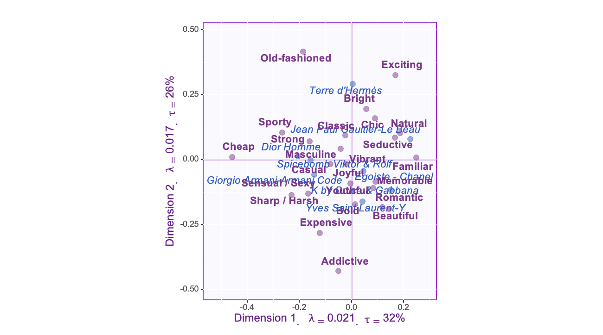
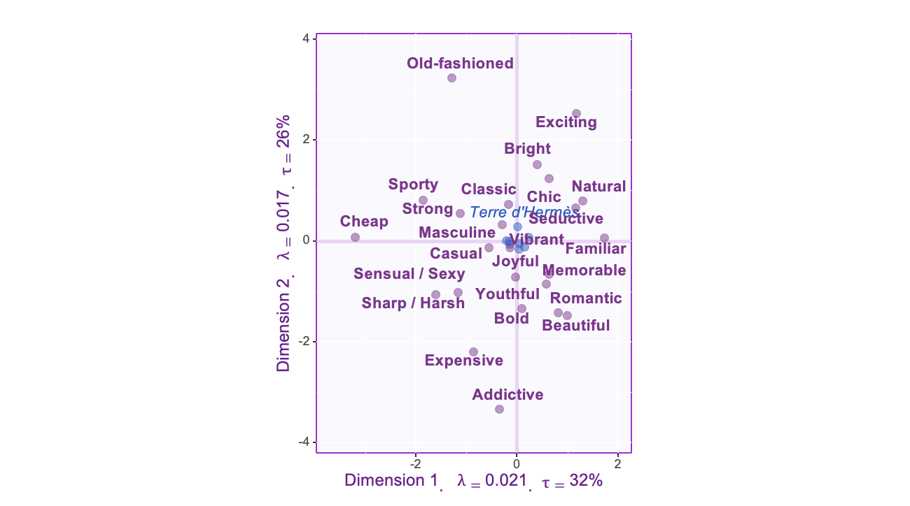

8 Symmetric vs Asymmetric results
For our we need to take a look at both the symmetric and Asymmetric results. In these cases the only thing that has changed it s the column factor scores, which makes a big difference on some maps.
8.1 First i want to take a look at the factor scores:
Symmetric

Asymmetric

For the Asymmetric graph it does not look like we can trust the row data to be accurate when it comes to its proximity to any attributes, and its also a mess to look at when it comes to looking at the rows as well. The symmetric map in this case appears to be a better representation even if some of the distances are a bit exaggerated.
8.2 Final observations
So now that we have all our data lets interpret it.
Dimension 1
Represents perfumes that are on one end, cheap,sharp,sporty,strong, not familiar
Spicebomb
Dior Homme
Represents perfumes on the other hand that are natural, seductive, and familiar
- Jean Paul
Lastly, represents perfumes described as beautiful
- K by dolce and cabana
Dimension 2
represents perfumes that are not addictive and old fashioned
- Terre D Hermes
Represents perfumes that are bold and addictive
- Yves Saint laurent